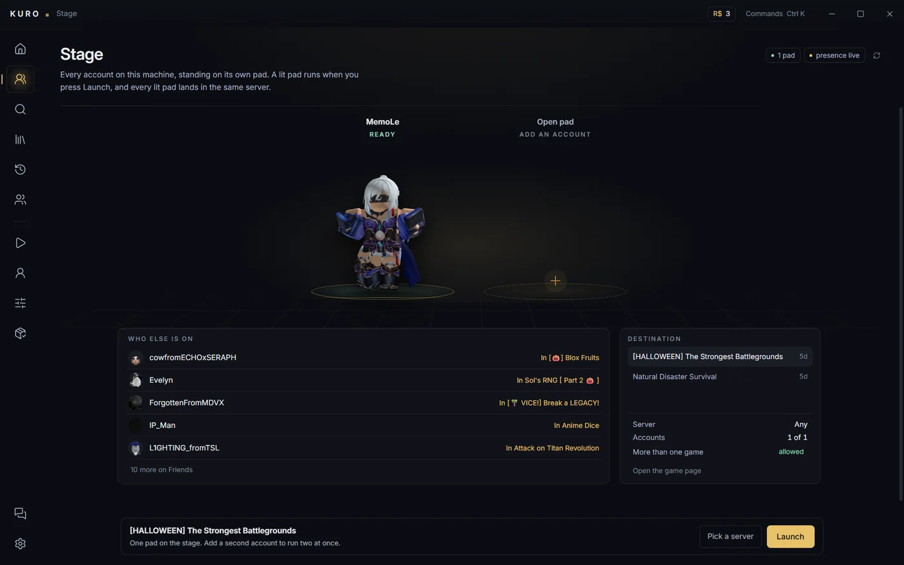
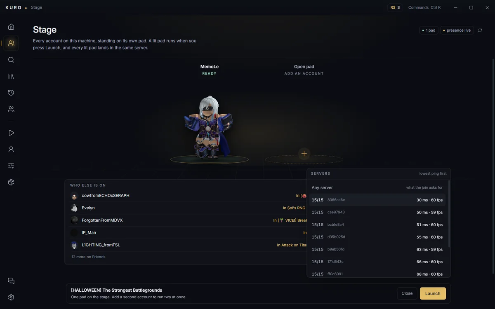

Windows 10 and 11, Tauri, Rust
A Roblox launcher that never touches Roblox.
Your accounts stand on pads. One press starts them together in the same server. It reads the same public API the website reads, mints a login ticket for one account, and runs the client Windows would have run.
v0.3.0 MIT 9.7 MB portable exe 126 Rust tests
The window
Nine pages, each with one job.
It is not a browser pointed at roblox.com. Every page answers a question the website cannot, because the answer is on this machine.
- Home
- Roblox's own discovery feed, dense, six tiles across, with live player counts.
- Stage
- One pad per account, the avatar Roblox renders for it now, and one press that starts them all.
- Search
- One deliberate query at a time, games and people, with the budget Roblox allows.
- Library
- What the account starred, and this machine's own record of what it launched.
- Sessions
- Every launch whose log is still here: where it went, how long it lasted, why it stopped.
- Launch
- A place, a link, a private invite, a friend's server. One client at a time, idempotent.
- Accounts
- Sign in with a six-character code, sessions sealed by Windows DPAPI, health checked.
- Flags
- Roblox's own 25,000-key catalogue, written as a lease that is restored when the client exits.
- Versions
- Both install roots, hash checked, pinned, pruned, verified, repaired.
And one strip that floats over the game: the server the client actually reached, and how long the join took.
The signature surface
Every account on a pad, every pad in the same server.
The stage is the page a website cannot build. It knows which accounts exist on this machine, which of them is free, and which client is about to start.

Sequential by design: two bootstrappers on one install write the same files. Three calls a minute: the server list is read once and reused. Per pad: a refusal names the pad it belongs to.

The line
What it refuses to do.
- It does not modify the client. No injection, no memory reads, no patched files. The executable it runs is byte-identical to the one Roblox installed.
- It does not ship your session. A cookie is unsealed inside one Rust call, used there, and sealed again with Windows DPAPI. It never reaches the page.
- It does not hide a paywall. A paid game's price stands on its tile, in search and on its page, before anything starts.
- It does not phone home. The only calls are the ones a page you opened would make, unless you turn on the assistant and give it an endpoint.
Install
Three files, one hash sheet.
Windows 10 or 11 with the WebView2 runtime, which most machines already have. The portable exe needs no installer at all.
Before you run it
The builds are unsigned, so Windows warns once on first run. That is a code-signing certificate this project does not have, not a sign of anything wrong with the file.
Every file has its hash beside it. Put the downloads in one folder and run
sha256sum -c SHA256SUMS.txt before you run anything else.
It replaces Roblox's own roblox:// handler only if you ask it to, from
Settings, and gives it back from the same row or on uninstall.
Not built yet
What is missing, and why.
A signed installer
No code-signing certificate, so SmartScreen warns once. The hash sheet is the substitute: check it before you run anything.
An updater
The app never phones home for anything but Roblox, so an update is a download, not a push.
Studio's links
roblox-studio and its auth scheme stay with Studio. An edit launch is not
a game, and taking it would be a lie about what this app is.